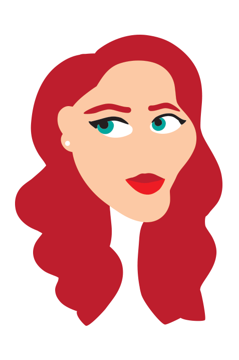
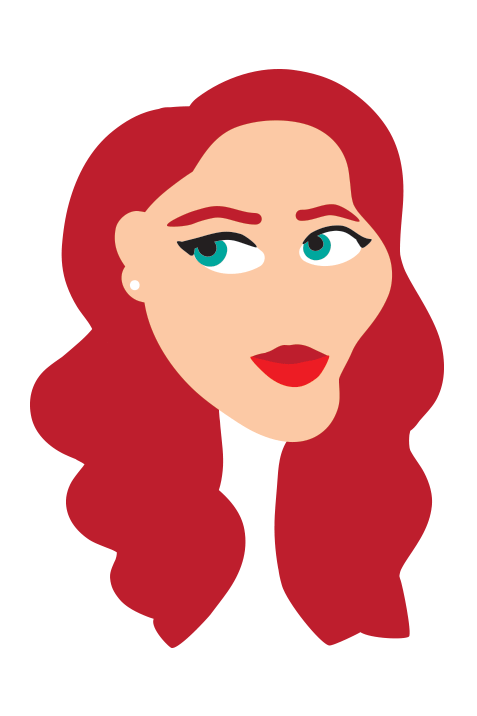
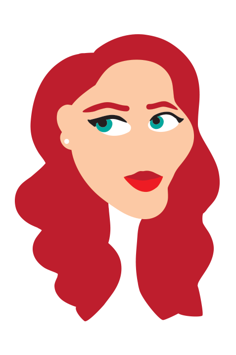

HOMEPAGE
GRAPHIC DESIGN
PHOTOS
CONTACT
×
Made with Illustrator
click on an image to learn more about it
Made with Photoshop
click on an image to learn more about it
Icons and Logos
click on an image to learn more about it



 
